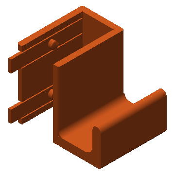
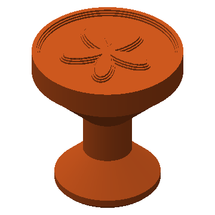
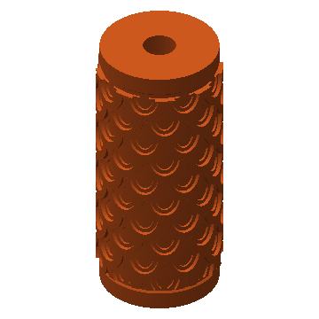

Parametryczne wydruki 3D
Wpisujesz wymiary tego, co masz w domu, oglądasz model w 3D i pobierasz STL gotowy do druku. Każdy model jest już ułożony na stole i drukuje się bez podpór. Wszystko liczy się w przeglądarce, nic nie wysyłasz na serwer.

Haki, kołyski, klipsy i płytki do słupków regału. W otwory albo na opasce wokół słupka, z częścią użytkową po drugiej stronie. W jednej części, z kołkami albo zatrzaskiem.

Stempel z napisu w wybranym kroju albo z własnej grafiki. Podgląd odcisku, lustro, pochylone boki reliefu i rączka na wcisk. Także mały znak twórcy na spód miski.

Wałek do faktury w glinie: romby, kropki, fale, jodełka, łuski, kratka albo twój obraz jako kafel. Relief wypukły lub wklęsły, pierścienie ustalające głębokość, otwór na oś.